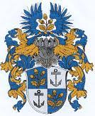

Family Tree_
The Tjeenk-Willink family has a well-detailed family record, beginning in 1634 with Jan Jurriensz Willinck, born in Winterswijk, eastern Netherlands. My great-grandfather emigrated to the United States through Ellis Island in the early 20th century (there the "Tjeenk" was dropped). The following family tree only dates back to the late 19th century, but for the complete version (in Dutch!), click here.
Gen Z: born between 1995-2013
- Freja Willink
- Rana Willink
- Thor Willink
- Zisa Willink
- Grady Towle
- Poppy Towle
Generation X (Baby Bust): born between 1965-1979
- Helen Beardsley
- Jocko Willink
- Jennie Willink
- Julie Willink
- Kaighn Towle
The Silent Generation: born between 1925-1945
- Peter Beardsley
- Colleen Beardsley
- John Willink
- Robin Gue
The Greatest Generation: born between 1900-1924
- Nathalie Elizabeth Gretton
- Arthur Tjeenk Willink
- Leon V Gue Jr.
- Martha F Best
The Lost Generation: born between 1890-1905
- Willem August Tjeenk Willink
- Frida Kleinsteuber
- Leon V Gue
- Jennie A Johnston
...&Coat of Arms

Here is the Tjeenk-Willink Coat of Arms. It consists of golden oak branches, symbolizing knowledge and morality, with two leaves 🍃 (fertility) and three acorns (immortality); and silver anchors, ⚓️ relflections of hope and stability, adorned with a helmet and crest.